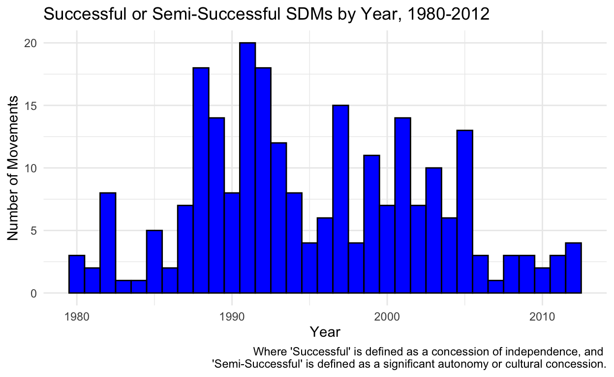
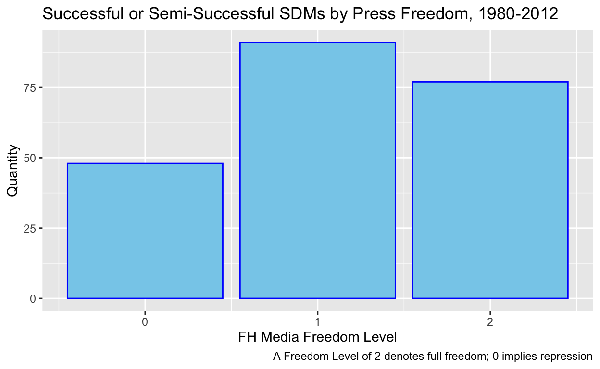

Separatist Region Concessions
As internet usage began to proliferate on a global scale throughout the early 21st century, questions abounded regarding the interaction between its accompanying “informational revolution” and the future of pro-democracy movements worldwide. Large-scale internet adoption coincided with an unprecedented global uptick in liberal democracy, catalyzed in part by the collapse of the Soviet Union, and the stakes justifiably appeared high. Even today, the relationship between internet penetration and democratization remains controversial; analysts have long identified its dual-edged potential to empower activists and boost informational equity while also conferring new tools upon authoritarians to consolidate their own power. In Rich Media, Poor Democracy, Robert W. McChesney (2015) used American case studies to point out that digital media may pose a threat to democracy. Similarly, Jacob Groshek and Kate Mays attributed “limited agency” to new media adoption vis-a-vis global democratization in a 2017 study of 72 countries. On global net, however, it appears internet may aid democratic transformation—a 2018 analysis of 125 countries, a significantly larger sample size, found that “internet penetration can remarkably increase democratization,” with effects that follow an inverted U-shaped curve (that is, the degree of democracy promotion is highest in middle-penetration countries).
Whatever the true impact of internet adoption on “democratization” broadly, I find the majority of past studies on this relationship to come short in two important ways. First, they focus on too general and diffuse of an outcome variable — “democracy adoption” is extremely prone to any number of non-internet confounders, such as exogenous global trends or specific leadership decisions with little relevance to technology. Democratization as an outcome variable is therefore less indicative of any specific internet-related causal mechanisms. Second, current studies frequently analyze all states in tandem, with little regard for the potentially differential impact of internet adoption in countries with varying civil-society openness (e.g. repressed vs. free).
For those reasons, my cross-sectional, data-driven inquiry into this relationship differs in two ways. First, instead of measuring for democracy adoption, it will prioritize another, smaller-scale outcome variable — whether or not domestic self-determination movements (SDMs) successfully elicit favorable concessions from their central governments. These SDMs may or may not explicitly pursue the broad concept of “democracy,” but — given that all of them feature groups seeking greater political autonomy under an ostensibly non-representative central government — they all implicitly further the democratic tenet of self-governance. And second, it will allow space for a potentially differential impact among free civil societies and repressed civil societies by grouping its analysis according to the level of domestic media repression.
I therefore arrive at the following research question: Does the degree of press/media repression have a differential impact on the success of self-determination movements relative to the year at which their country widely adopted internet usage? In other words, might the potential for internet usage to aid self-determination movement success be less salient under central governments that suppress their media and civil society spheres? I hypothesize that under central governments that repress the media, internet adoption will have a lesser positive impact on the rate at which self-determination movements successfully achieve independence, an autonomy-related concession, or a cultural concession from their central governments.
My inquiry merges three data sets in order to conduct its analysis, all three of which are coded using historical records.
The first, and by far most important, data source is Nicholas Sambanis’s, Micha Germann’s and Andreas Schädel’s SDM: A New Data Set on Self-determination Movements with an Application to the Reputational Theory of Conflict. This set identifies 464 self-determination movements, which it defines as “constituted by one or more political organizations that are connected to an ethnic group and make claims for increased self-determination from the state.” The variables of note here are “year,” which ties the movement to a calendar year, “country,” which ties the movement to the internationally-recognized sovereign state that includes its claimed territory, and “con,” a binary variable that tracks “concessions by the state to SDM groups in the form of policies that increase SDM groups’ levels of self-rule … and/or increase their cultural rights status” in each given calendar year, but does not account for “token or very minimal concessions.”
See below a histogram plot that summarizes the number of SDMs that elicited some concession from their central government across the reference period of 1980 to 2012:
SDMcon <- SDM |>
filter(con == 1) |>
filter(year > 1979)
ggplot(data=SDMcon, aes(x=year)) +
geom_histogram(binwidth = 1, fill = "blue", color = "black") +
labs(
title = "Successful or Semi-Successful SDMs by Year, 1980-2012",
x = "Year",
y = "Number of Movements",
caption = "Where 'Successful' is defined as a concession of independence, and
'Semi-Successful' is defined as a significant autonomy or cultural concession."
) +
theme_minimal() 
I then merged this with the dataset containing all of Freedom House’s freedom of the press index scores from 1979 to 2016, with variables for the country name and its press_freedom, measured as either 0, “not free,” 1, “partly free,” or 2, “free.” A full description of Freedom House’s rigorous methodology in developing these index scores is easily findable on their website.
freedom <- read_csv("press-freedom-fh.csv")
freedom$Entity[freedom$Entity == "Russia"] <- "Russia (USSR)"
SDM_freedom <- merge(SDM, freedom, by.x = c("country", "year"), by.y = c("Entity", "Year"), all.x = TRUE)
SDM_freedom <- SDM_freedom |>
filter(year > 1979) |>
filter(!is.na(con)) |>
rename(press_freedom = "Freedom of the Press")
#move freedom up
SDM_freedom <- SDM_freedom[, c(1:6, 108, 7:107)]
SDMcon_freedom <- SDM_freedom |>
filter(con == 1)The spread of SDMs that elicited concessions is visible in the bar plot below:
ggplot(SDMcon_freedom, aes(x = press_freedom)) +
geom_bar (color = "blue", fill = "skyblue") +
labs(title = "Successful or Semi-Successful SDMs by Press Freedom, 1980-2012",
x = "FH Media Freedom Level",
y = "Quantity",
caption = "A Freedom Level of 2 denotes full freedom; 0 implies repression") 
Finally, I used Our World in Data’s “Share of the population using the Internet” dataset, which it sources from International Telecommunication Union data, to tie the SDM data to the rate of internet usage among their central governments’ respective populations.
internet <- read_csv("internet_usage.csv")I performed a few key transformations on the data to prepare it for my analysis. First, because my study is interested in the differential impact of internet usage among levels of media repression, I grouped the SDMs by their central government repression level, and then again by their year to develop a yearly SDM success rate for each level of press freedom. I chose to calculate a yearly success rate because it incorporates unsuccessful or concession-less movements, rather than merely counting the successful ones. Given the parameters of the data, yearlong intervals seemed to be the ideal length because they are not so long that they minimize rapid changes in internet adoption, but not so short that they minimize SDMs, given SDMs’ slow emergence.
#(ignore 2yr modifier)
SDM_freedom_2yr <- SDM_freedom |>
mutate(period = cut(year, breaks = seq(1980, max(year) + 2, by = 2), include.lowest = TRUE, labels = FALSE))
SDM_freedomlevel_successrate <- SDM_freedom_2yr |>
group_by(press_freedom, period) |>
summarize(success_rate = mean(con))
SDM_freedomlevel_successrate <- SDM_freedomlevel_successrate |>
filter(!is.na(press_freedom))
SDM_freedomlevel_successrate$press_freedom <- as.factor(SDM_freedomlevel_successrate$press_freedom)The other key transformation was to anchor each SDM to the proliferation of internet usage in their central governments’ territories. I accomplished this by choosing a somewhat arbitrary benchmark year and creating a new variable for the time (in years) between a given SDM and that benchmark. For the benchmark, I chose the year in which each SDM’s central government’s population reached 0.15% internet usage, which I figured to be a significant enough share that the internet would have attained relevance among elites (and that non-elites would be somewhat aware of its existence), yet small enough that presently developing countries would not completely fade out of my reference group.
internet_benchmark <- internet |>
rename(usage_rate = "Individuals using the Internet (% of population)") |>
rename(benchmark_year = "Year") |>
group_by(Entity) |>
filter(benchmark_year == min(benchmark_year[usage_rate >= 0.15])) |>
slice(1)
internet_benchmark <- internet_benchmark |>
filter(!is.na(Code)) |>
filter(usage_rate < 1)
SDM_freedom_internet <- left_join(SDM_freedom, internet_benchmark, by = c("Code" = "Code"))
SDM_freedom_internet <- SDM_freedom_internet |>
mutate(bench_dist = year - benchmark_year)
SDM_freedomlevel_internet_successrate <- SDM_freedom_internet |>
group_by(press_freedom, bench_dist) |>
filter(!is.na(bench_dist)) |>
filter(bench_dist <= 10 & bench_dist >= -10) |>
summarize(success_rate = mean(con)) With the data thus primed, the differential impact of media repression on SDM success, measured across time relative to internet adoption, could be analyzed.
A scatter plot of SDM success rate over time, relative to the internet benchmark, for those facing each of the three press freedom levels, is visualized below.
ggplot(SDM_freedomlevel_internet_successrate, aes(x = bench_dist, y = success_rate, color = factor(press_freedom))) +
geom_point() +
geom_smooth(method = "lm", se = FALSE) +
labs(title = "Success Rate Across Years, Centered Around Benchmark",
x = "Years from 0.15% Internet Use Benchmark",
y = "Success Rate",
color = "Press Freedom Level") +
scale_color_manual(values = c("red", "orange", "darkgreen")) + # Customize colors if needed
theme_minimal()As evident from the plot, there appears to be some statistical support for my hypothesis. The best-fit lines for each group indicate a positive correlation between time relative to internet adoption and SDM success rate for free civil societies, yet negative correlations for both partially free and unfree media spheres. Intriguingly, the partially-free negative correlation appears steeper, but by a small enough margin that it can probably be attributed to random chance and the small sample size.
What remains to be established is whether this apparent difference between free and unfree or partially free civil societies is statistically significant. To test the significance of my results relative to my research question, I first grouped the success rates into free and a merged less-than-free group (e.g. a Freedom House score of 1 or 0). I then ran regressions of success rate (Free_Success_Rate & Unfree_Success_Rate) on benchmark distance, which found a 0.0065462 coefficient for the free group and a -0.0051631 coefficient for the less-than-free group.
surpressed_successrate <- SDM_freedomlevel_internet_successrate |>
filter(press_freedom %in% c(1, 0)) |>
group_by(bench_dist) |>
summarise(success_rate = mean(success_rate))
SDM_successrate_merged <- SDM_freedomlevel_internet_successrate |>
filter(press_freedom == 2) |>
right_join(surpressed_successrate, by = "bench_dist")
SDM_successrate_merged <- SDM_successrate_merged |>
ungroup() |>
select(-press_freedom) |>
rename(Free_Success_Rate = success_rate.x, Unfree_Success_Rate = success_rate.y)
SDM_successrate_merged# A tibble: 21 × 3
bench_dist Free_Success_Rate Unfree_Success_Rate
<dbl> <dbl> <dbl>
1 -10 0 0.2
2 -9 0 0.0192
3 -8 0.0667 0.207
4 -7 0 0.0635
5 -6 0 0.115
6 -5 0.2 0.146
7 -4 0.0435 0.199
8 -3 0.125 0.0930
9 -2 0.04 0.0238
10 -1 0.25 0.0571
# ℹ 11 more rows#Run regressions
mod_free <- lm(data = SDM_successrate_merged, Free_Success_Rate ~ bench_dist)
mod_unfree <-lm(data = SDM_successrate_merged, Unfree_Success_Rate ~ bench_dist)
summary(mod_free)
Call:
lm(formula = Free_Success_Rate ~ bench_dist, data = SDM_successrate_merged)
Residuals:
Min 1Q Median 3Q Max
-0.13485 -0.05412 -0.04320 0.05268 0.17465
Coefficients:
Estimate Std. Error t value Pr(>|t|)
(Intercept) 0.112863 0.018735 6.024 8.53e-06 ***
bench_dist 0.006546 0.003094 2.116 0.0478 *
---
Signif. codes: 0 '***' 0.001 '**' 0.01 '*' 0.05 '.' 0.1 ' ' 1
Residual standard error: 0.08585 on 19 degrees of freedom
Multiple R-squared: 0.1907, Adjusted R-squared: 0.1481
F-statistic: 4.477 on 1 and 19 DF, p-value: 0.04779summary(mod_unfree)
Call:
lm(formula = Unfree_Success_Rate ~ bench_dist, data = SDM_successrate_merged)
Residuals:
Min 1Q Median 3Q Max
-0.116078 -0.036862 -0.004435 0.031684 0.089370
Coefficients:
Estimate Std. Error t value Pr(>|t|)
(Intercept) 0.088842 0.011809 7.523 4.12e-07 ***
bench_dist -0.005163 0.001950 -2.648 0.0159 *
---
Signif. codes: 0 '***' 0.001 '**' 0.01 '*' 0.05 '.' 0.1 ' ' 1
Residual standard error: 0.05411 on 19 degrees of freedom
Multiple R-squared: 0.2695, Adjusted R-squared: 0.231
F-statistic: 7.009 on 1 and 19 DF, p-value: 0.01589#Make Table
coefs_free <- tidy(mod_free)
coefs_unfree <- tidy(mod_unfree)
coefs_free$Model <- "Free"
coefs_unfree$Model <- "Less Than Free"
freeunfree_table <- bind_rows(coefs_free, coefs_unfree) |>
select(Model, term, estimate, std.error, statistic, p.value)
# Print the result table
knitr::kable(freeunfree_table) #still need to fix col names| Model | term | estimate | std.error | statistic | p.value |
|---|---|---|---|---|---|
| Free | (Intercept) | 0.1128633 | 0.0187348 | 6.024256 | 0.0000085 |
| Free | bench_dist | 0.0065462 | 0.0030940 | 2.115813 | 0.0477917 |
| Less Than Free | (Intercept) | 0.0888418 | 0.0118088 | 7.523382 | 0.0000004 |
| Less Than Free | bench_dist | -0.0051631 | 0.0019502 | -2.647512 | 0.0158854 |
These coefficients imply that for every additional year centered around the 0.15% internet-adoption benchmark, the success rate of SDMs in the free group increases by about 0.66 percentage points, and the success rate of SDMs in the less-than-free group decreases by about 0.51 percentage points. Across a 20 reference interval, these results are practically significant — for example, in the free group, the coefficient implies a roughly 13 percentage-point difference from 10 years before the benchmark to 10 years after. A 13% house edge on a casino table game, say, would drive any reasonable gambler to another locale.
To test for statistical significance, we can look to p values. The p values of the regression coefficients for the free and unfree groups were 0.0477917 and 0.0158854, respectively. Therefore, with an alpha of 0.05, we may reject — with 95% confidence — the null hypothesis that there is no impact of the explanatory variable (distance from the internet usage benchmark) on the dependent variable (SDM success rate for a given year).
Furthermore, the standard errors associated with these regression results allow us to construct a 95% confidence interval, or the range of values so defined that there is a 95% probability that the value of the regression lies within it.
confint(mod_free, 'bench_dist', level=0.95) 2.5 % 97.5 %
bench_dist 7.05082e-05 0.01302195confint(mod_unfree, 'bench_dist', level=0.95) 2.5 % 97.5 %
bench_dist -0.009244766 -0.001081336For the free group, then, we arrive at a 95% confidence interval of [7.05082e-05, 0.01302195]. For the less-than-free group, we derive [-0.009244766, -0.001081336]. Both bounds on these confidence intervals exclude zero, implying the same statistical significance of their coefficients as before. Especially notable is that these confidence intervals do not overlap at all, which means that we may say (with 95% confidence) that the relationship of note, between temporal distance from the internet benchmark and SDM concession rate, is more positive in the free than the less-than-free group. In other words, there is a statistically significant differential impact of civil-society freedom level on SDM concession achievement over time relative to internet adoption.
It is important to underscore that this statement represents a far cry from confidently asserting a casual relationship between repression and digitally enabled self-determination. Like many similar quantitative studies in the social sciences, there exist a host of potential confounders and identifying assumptions that preclude a good-faith assertion of causality. However, within the context of this study, a statistically significant corollary relationship has been uncovered, and my hypothesis finds legitimate support.
For example, instead of media freedom driving the positive impact of internet adoption on SDM success, it could be that the types of SDMs that exist within free civil societies are, for some unknown exogenous reason, more likely to elicit concessions. Perhaps their leaders are better educated, as most of the world’s leading universities seem to exist within liberal societies (though this might not explain the temporal element). Perhaps their economies have recently grown more advanced relative to the rest of the world, and so the opportunity cost of working for an SDM might be lower. Or perhaps the incidence of liberal civil societies, relative to the world at large, has grown or shrunk in some way that has adverse effects on these results.
Equally problematic is the potential for some limited, narrow political event or trend to have skewed these results. This risk is especially salient with such a small population size as the one considered in this study. For example, the fall of the Soviet Union in the late-20th century largely coincided with the worldwide adoption of the internet, and the resulting widespread political destabilization sparked scores of nascent SDMs. This event — which cannot be attributed to mere internet adoption — may have exerted impact upon my observed relationship. So might shifting geopolitical power dynamics and the rise of a more multipolar global order (not to mention the related and recent worldwide trend of institutional backsliding). These conditions do not undermine the existence of the statistically and practically significant relationship I identified, but they do preclude a causality statement. Some aspects of my experimental design also carried their own implicit assumptions. I assumed, for instance, that one-year intervals would be the ideal measure of SDM success rate. I also included what the Sambanis et al dataset defines as “cultural concessions,” or the “binary variable flagging concessions on cultural or minority rights, including concessions on language rights, religion, and education,” among the successful outcomes. Perhaps it would have been better to include only the SDMs that gained full independence; with only 13 entries falling into that category, however, the sample size probably would have been too small to identify a relationship.
Another study focusing on the same research question, but backed by more time, money, and expertise, might conduct a more lengthy robustness test to isolate potential confounders (like those identified above). It also might go beyond this relatively rudimentary correlational study and specifically assess whether each SDM employed the internet in their pursuit of SD, which would better isolate causal mechanisms than relying on the mere presence of the internet in a given central government’s controlled territory. Finally, a study with unlimited financial and ethical capital might conduct a randomized controlled trial (RCT), wherein an internet-related treatment is assigned to some nascent SDMs and not others, with their successes monitored. Such an RCT would be borderline impossible, however, and a case-by-case revamping of the core dataset would require very significant labor — thus, given the constraints this study faces, I am satisfied with the differential correlational relationship that it has identified.
“Expanding Freedom and Democracy.” Freedom House, freedomhouse.org/. Accessed 9 Dec. 2023.
Groshek, Jacob, and Kate Mays. “A Time-Series, Multinational Analysis of Democratic Forecasts and Emerging Media Diffusion, 1994–2014.” International Journal of Communication, ijoc.org/index.php/ijoc/article/view/5676/1910. Accessed 9 Dec. 2023.
Herre, Bastian, et al. “Democracy.” Our World in Data, 25 Sept. 2023, ourworldindata.org/democracy.
McChesney, Robert Waterman. Rich Media, Poor Democracy: Communication Politics in Dubious Times. The New Press, 2015.
Sambanis, Nicholas, et al. “SDM: A new data set on self-determination movements with an application to the reputational theory of conflict.” Journal of Conflict Resolution, vol. 62, no. 3, 2017, pp. 656–686, https://doi.org/10.1177/0022002717735364.
“Share of the Population Using the Internet.” Our World in Data, ourworldindata.org/grapher/share-of-individuals-using-the-internet. Accessed 9 Dec. 2023.
Zang, Leizhen, et al. “Reversing the U: New Evidence on the Internet and Democracy Relationship.” Social Science Computer Review, 2018, journals.sagepub.com/doi/10.1177/0894439318767957.